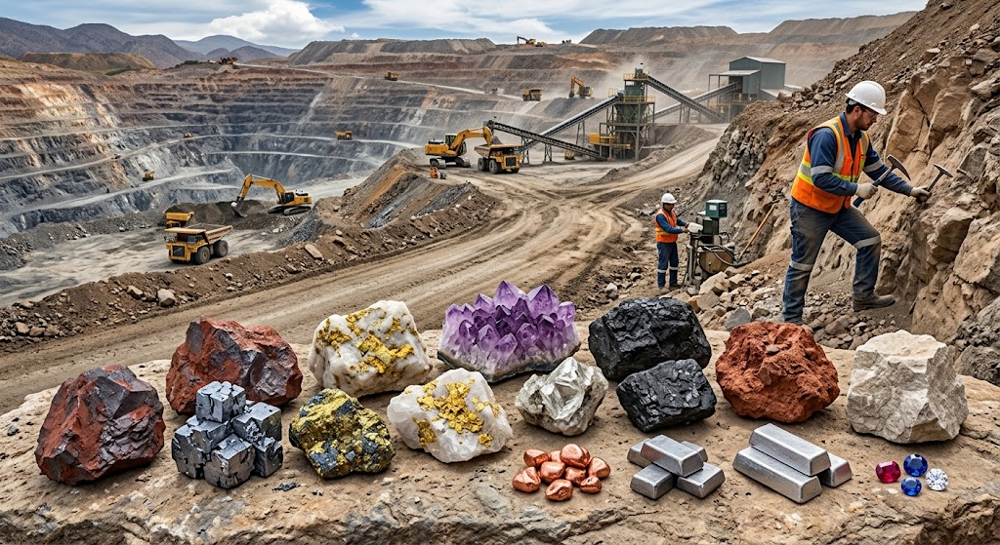

แร่และทรัพยากรธรณี
แร่เป็นสารอนินทรีย์ที่เกิดขึ้นเองตามธรรมชาติ มีองค์ประกอบทางเคมีและโครงสร้างผลึกที่แน่นอน แร่แต่ละชนิดมีสมบัติเฉพาะตัว เช่น สี ความแข็ง ความวาว แนวแตก และความถ่วงจำเพาะ ซึ่งสามารถใช้ในการจำแนกชนิดของแร่ได้ แร่มีบทบาทสำคัญต่อการดำรงชีวิตของมนุษย์ เนื่องจากเป็นวัตถุดิบที่นำมาใช้ในอุตสาหกรรม การก่อสร้าง การผลิตเครื่องมือ และเทคโนโลยีต่าง ๆ
ทรัพยากรธรณีหมายถึงทรัพยากรธรรมชาติที่เกิดจากกระบวนการทางธรณีวิทยา ได้แก่ แร่โลหะ แร่อโลหะ หิน ดิน น้ำบาดาล และเชื้อเพลิงธรรมชาติ ตัวอย่างแร่โลหะที่สำคัญ ได้แก่ เหล็ก ทองแดง และอะลูมิเนียม ซึ่งนำไปใช้ในการผลิตเครื่องจักร สายไฟ และผลิตภัณฑ์อุตสาหกรรม ส่วนแร่อโลหะ เช่น ยิปซัมและเกลือหิน สามารถนำไปใช้ในอุตสาหกรรมก่อสร้างและการผลิตสารเคมี นอกจากนี้หินปูนยังเป็นวัตถุดิบสำคัญในการผลิตปูนซีเมนต์
ทรัพยากรธรณีเป็นทรัพยากรที่มีความสำคัญต่อการพัฒนาเศรษฐกิจและสังคม แต่การสำรวจและนำมาใช้ประโยชน์อาจส่งผลกระทบต่อสิ่งแวดล้อม เช่น การทำเหมืองแร่ทำให้เกิดการเปลี่ยนแปลงภูมิประเทศ การทำลายพื้นที่ป่า และการปนเปื้อนของแหล่งน้ำ ดังนั้นจึงควรมีการวางแผนใช้ทรัพยากรอย่างคุ้มค่า มีการฟื้นฟูพื้นที่หลังการใช้ประโยชน์ และส่งเสริมการอนุรักษ์ทรัพยากรธรณีเพื่อให้สามารถใช้ประโยชน์ได้อย่างยั่งยืน